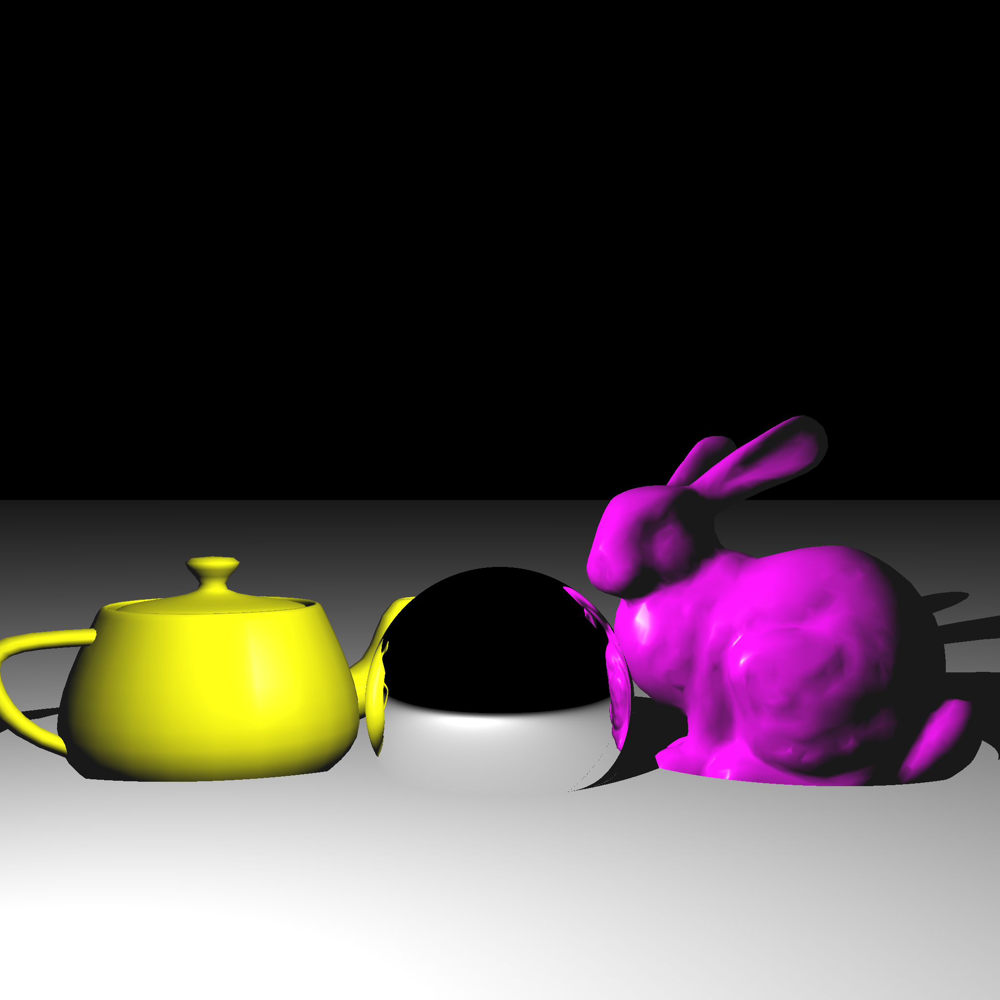
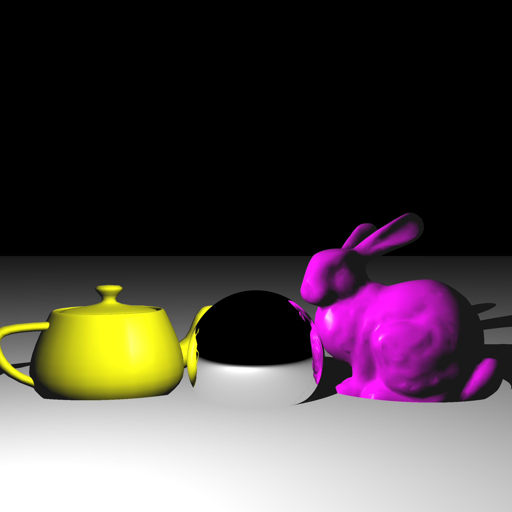

Portfolio
The final project in my computer graphics class was to implement dynamic geometry, deferred rendering, and bloom in OpenGL.
I went on to extend this project with tiled-deferred rendering as well.
Dynamic Geometry
There are various geometrical objects with transformations in this project, including: bouncing spheres, surfaces of revolution that deform, rotating bunnies, and shearing teapots.Deferred Rendering
Instead of having one rendering pass whereby the scene is rendered directly to the screen, in deferred rendering we have two passes. In the first pass we render the normal, diffuse, position, and emissive lighting attributes to their own textures. For the secon pass we draw a fullscreen quad and apply these textures with the lighting component onto the quad.Bloom
Bloom is a post-processing method that gives light sources a glow effect. I used a Gaussian-Filter implementation for my bloom. The bloom effect is it's own texture which is computed after the first render pass but before the second.Tiled-Deferred Rendering
Tiled-deferred rendering becomes necessary when there are a lot of lights in a scene. It increases performance by only applying light sources to a fragment if they effect it. The first step in this process is dividing the view frustum into several different frustums, where each frustum corresponds to a different tile in the near plane. In the second pass we loop through each of these view frustums and perform a view-frustum intersection test on each light. If the light's area of effect (governed by its attenuation) is inside or intersecting the frustum, we include that light in that tile's fragment computation. 

One of the projects in my computer graphics class was to create an offline ray tracer from scratch in C++.
Technical Details
This was a difficult yet immensely rewarding project. It was difficult in that I started from scratch and had to learn how light behaves in the real world in order to simulate it accurately. One skillset among many you quickly sharpen in computer graphics is math, specifically with regards to linear algebra and vectors. After finally cracking the code of putting math and physics into code to simulate light the results were very satisfying.Problems
A problem I ran into a lot with the project was having to overhaul big sections of code whenever I needed to add a new feature (shadow rays, triangle intersections, reflection, etc). From this I learned that I need to spend more time planning out the program, so that I don't need to refactor large blocks of code repeatedly.Future Improvements
Some future improvements I have in mind for this ray tracer are implementing ray-triangle acceleration techniques like a KD-tree, and implementing refraction.
In this project I implemented Craig Reynolds' work on simulating animal flocking behavior. The different colored triangles in the demo represent two different "species"
of agents, and the white dots in the middle represent obstacles. The agents only flock with members of the same species, and they avoid the obstacles.
Technical Details
The flocking behavior is achieved with three simple behaviors calculated by each agent.1. Alignment: Agents are compelled to orient themselves in a similar direction as their neighbors.
2. Avoidance: Agents are compelled to move away from nearby agents if they are within a certain threshold.
3. Cohesion: Agents are compelled to move towards the midpoint of all nearby agents within a certain threshold.
These behaviors can be weighted differently for different species, thus achieving flocks that move and look differently.
Future Improvements
In the future I would like to add custom behaviors for predator agents which chase down and eat the normal agents. To complement this, I would also create a new behavior for the normal agents to flee from predator agents.
For this project I utilized the Pygame library to create Snake in Python.